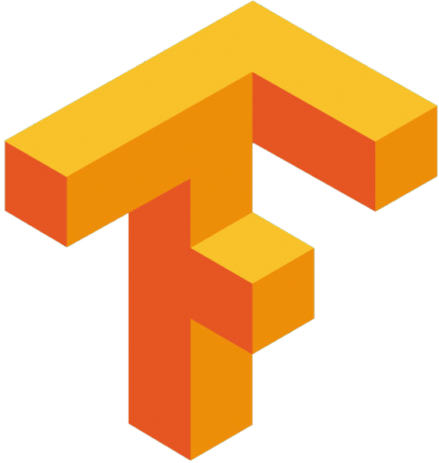
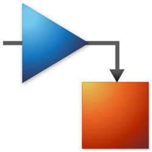
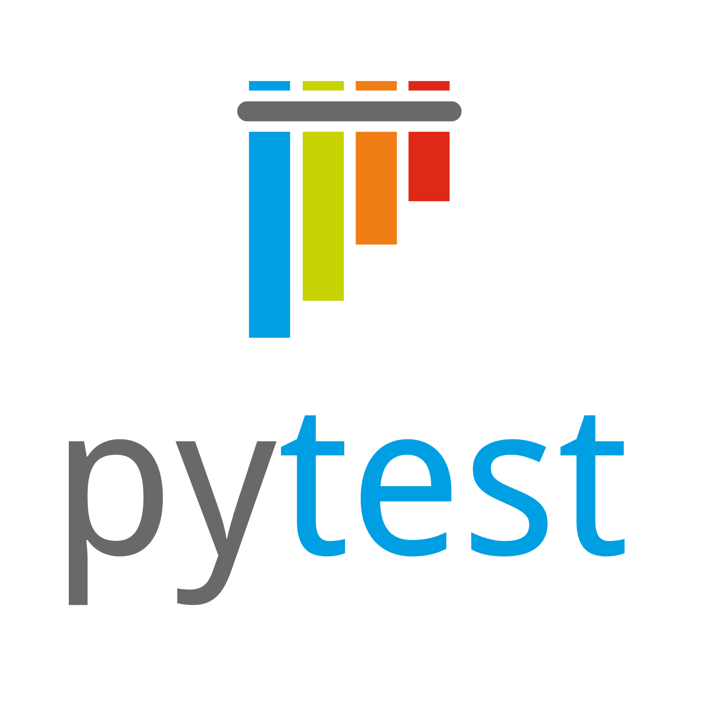

Computational engineer · data systems · battery analytics
Engineering battery intelligence with
I design data systems and modeling workflows that turn battery test data, simulation outputs, and field diagnostics into reliable engineering decisions. My work blends automation, manual SQL analysis, and physics-based battery modeling.
PyBaMM
SQL
MongoDB
GT-Suite
Current focus
Automation, model validation, and engineering data systems.
Building SoH and SoC validation, simulation orchestration, and dashboard-ready reporting for EV battery programs.
Focus areas
Battery diagnostics
Fleet analytics
Range prediction
Data validation
Best fit
- Automation pipelines for engineering workflows
- SQL, reporting, and manual diagnostics
- Simulation-backed decision support
Profile
Bridging simulation depth with production-ready analytics.
I work where battery modeling, data quality, and engineering operations intersect, turning raw telemetry into dependable decisions.
What I build
Workflows that stay rigorous from lab models to field diagnostics.
I connect PyBaMM and GT-Suite simulation workflows with SQL analysis, data validation, and reporting layers so teams can move faster without losing engineering quality.
Simulation orchestration
Manual SQL diagnostics
Automation pipelines
Dashboard reporting
Battery analytics
Model calibration
Core strengths
- Automation pipelines for analytics, reporting, and quality checks.
- Manual SQL, database validation, and fleet data diagnostics.
- Battery modeling with PyBaMM, GT-Suite, COMSOL, and MATLAB/Simulink.
- Predictive modeling for SoH and SoC estimation with strong validation loops.
Career
Experience across battery programs, fleet data, and simulation systems.
Hands-on work across EV cell modeling, physics-based validation, IoT analytics, and engineering reporting.
Ola Electric Technologies Pvt. Ltd.
Assistant Manager, Cell Modelling Engineer · Bengaluru May 12, 2025 - Present- Developed real-time SoH prediction models in PyBaMM and GT-AutoLion to validate field test data for NMC cells.
- Built co-simulation models in MATLAB and Simulink to estimate SoC and SoH error bounds.
- Automated performance and range prediction pipelines in GT-Suite and delivered service complaint dashboards.
- Implemented physics-based SoC and SoH models for Ola Bharat 4680, LG, and BAK cells with validation checks.
- Worked with PostgreSQL and MongoDB for analytics, validation, and field diagnostics.
SAR Electric Mobility (Lime.ai)
Senior Engineer · Bengaluru January 16, 2023 - May 6, 2025- Developed FEA models to analyze mechanical stress and strain in battery structures.
- Designed Kalman filter based SoC estimation algorithms for NMC and LMFP chemistries.
- Built scalable data pipelines for IoT battery data and predictive aging analytics.
- Led CFD and thermal analysis initiatives to improve pack cooling efficiency.
- Delivered ML-driven SoH prediction and fault detection for real-time diagnostics.
BITS Pilani, Hyderabad Campus
Teaching Assistant · Hyderabad January 1, 2022 - December 31, 2022- Conducted labs for AI-driven ADAS concepts and mentored Python ML implementations.
Satish Dhawan Space Centre, ISRO
Intern · Sriharikota 2018- Worked on cryogenic fuel systems and monitored data operations for compressors, pumps, and storage systems.
Selected work
Projects that move from notebook prototypes to engineering decisions.
A mix of internal platforms, predictive models, and physics-driven battery tooling.
olabatsim
Battery simulation platform for fast, repeatable runs across Python and GUI workflows.
- Achieved under 2 percent error during SoH changes with data loss scenarios.
- Predicted field voltage with SPMe models under 1 percent error.
lime internal getter
Internal data handling library for streamlined retrieval and analytics workflows.
- Optimized data access for serial number and IMEI based testing.
- Integrated with IoT pipelines for analytics and model validation.
Cell Unbalance Prediction
LLM based model to predict cell unbalance dates with high accuracy.
- Reached 90 percent accuracy for predicting unbalance date windows.
Physics Based Cell Modelling
Physics-based NMC and LFP models for fast simulation and charging analysis.
- Matched experimental voltage profiles for NMC and LFP cells.
Physics Informed Model
Physics-based correction model for SoH and SoC to improve fast charging accuracy.
- Delivered 2x lower error than competitor baselines with accurate voltage matching.
Capabilities
A toolkit built for simulation, data, and automation.
Selected software, libraries, and methods used across battery programs and reporting systems.
Developer Tools
 Python
Python C
C Go
Go Git
Git PyTorch
PyTorch
TensorFlow Scikit-learn
Scikit-learn PyBaMM
PyBaMM MATLAB
MATLABSimulation and Software
GT-Suite
GT-AutoLion
COMSOL
 ANSYS
ANSYS SolidWorks
SolidWorks
SimulinkData and Databases
 MongoDB
MongoDB Pandas
Pandas NumPy
NumPyAdditional skills
SQL
PostgreSQL
Automation and Reporting

Pytest Docker
DockerAdditional skills
Automation Pipelines
Data Validation
ETL
Dashboards
Monitoring
Methods
FEA
CFD
Kalman Filters
SoH/SoC
Diagnostics
HPC
Soft Skills and Languages
Project Management
Leadership
Communication
English
Hindi
Malayalam
Education
Academic background rooted in mechanical engineering and simulation.
Strong engineering fundamentals, with graduate work that sharpened simulation and modeling depth.
BITS Pilani, Hyderabad Campus
M.E. in Mechanical Engineering
Amrita School of Engineering, Amritapuri Campus
B.Tech in Mechanical Engineering
Christ Nagar English Higher Secondary School, Kerala
Higher Secondary Education, Kerala State Board of Education
Research
Published work in robotics, localization, and thermal simulation.
Research output that combines control systems, simulation fidelity, and engineering rigor.
Effects of Systemic Error on Localization and Control of Differential Drive Mobile Robot
International Journal of Microsystems and IoT · December 18, 2023
View publicationSteady State Thermal Simulation of High Temperature PEM Fuel Cell with Different Flow Field Patterns
AIP Publishing · June 3, 2024
View publicationRecognition
Recognition for engineering impact and research contributions.
Awards tied to performance, collaboration, and technical contribution.
Best Performer of the Month
Lime.ai
Value Award AIM and ACT
Lime.ai · Cell Algorithm Modeling Team
ISVE Best Paper Award
Artificial Intelligence and Deep Learning Section
Contact
Open to battery analytics, automation, and data-system roles.
If your team needs simulation depth, data rigor, and clean execution, I am available to talk.